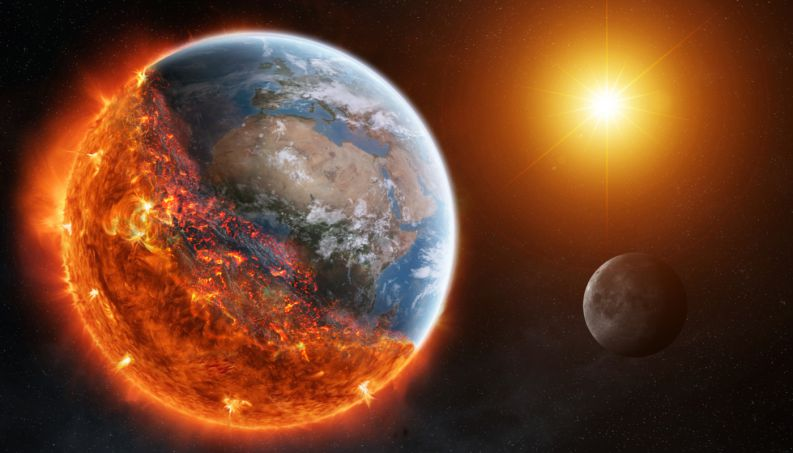

Infelizmente temos diversos desastres naturais, e muitos deles ainda nao possuem o controle, ou dados para saber quando sua probabilidade de acontecer é maior, ou até mesmo sua gravidade, assim como acontecem com os Terremotos, Tsunamis, e Tornados, sendo na maioria das vezes captados antes de chegar nas grandes cidades. Com isso, o governo consegue avisar as pessoas para evacuarem de suas casas, e se alojarem em locais seguro. Porém esses desastres naturais citado acima, infeizmente não podem ser parados.
Outro "monstro natural" bem comum em lugares com baixa umidade, e temperatura muito alta, são os Incêndios
Florestais,  que se expalham muito rapidos, destruindo 100% o local que está atuando. Mas diferente dos outros
desastres, os Incendios Florestais podem ser combatidos, e até evitado. Mas Como?
que se expalham muito rapidos, destruindo 100% o local que está atuando. Mas diferente dos outros
desastres, os Incendios Florestais podem ser combatidos, e até evitado. Mas Como?
Imagina se tivesse um sistema que, alem de medir a temperatura e umidade, mostrando os locais que tem maiores probabilidade de acontecer esses desastres, ele consegue alertar o corpo de bombeiro, o proprietario do terreno, e até as pessoas que moram em volta, quando um incêndio se iniciar, e com isso, os bombeiros chegariam mais rapido no local, e combateriam o incendio antes mesmo que ele devastasse 5% da zona. Seria incrivel, não é? E nao só isso. Imagina também que, além de mostrar todos esses dados, ele avisaria quando a umidade do local estivesse baixa, para que equipes pudessem ir nessa parte, e umidecer a zona, evitando qualquer tipo de incendio.
É isso que nossa empresa faz! Criamos esse sistema, para evitar que mais um desastre como este, acabe com nossas casas, nossa floresta, nosso trabalho, e nosso planeta. Nos importamos principalmente com as vidas das pessoas, e com o meio ambiente, mas também com as perdas que esse desastre faz, e tudo para evitar futuros desastres. Nosso planeta tende a esquentar cada vez mais, principalmente por causa da nossa camada de ozônio, que esta sendo destruida cada vez mais pela população, e as zonas rurais, que estão diminuindo cada vez mais, e por isso, esta sendo cada vez mais comum esses desastres acontecerem.
Vamos acabar com isso juntos! Faça seu cadastro para mais informações, e contrate nosso serviço, para ter essa proteção perto de você.